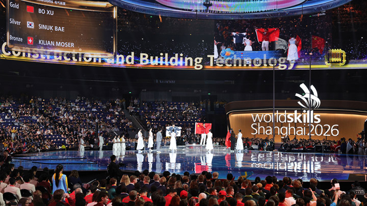

《影之刃零》被击败的敌人不会重生，武器升级可随时重置，地图上的资源有限（4Gamer采访）
这款游戏几乎所有方面都好得让人难以置信，有时候真的不敢相信。
这款游戏几乎所有方面都好得让人难以置信，有时候真的不敢相信。

网友：原因很简单，就是因为他们能做出好玩的游戏，仅此而已。这些开发者是真正关心自己开发的产品，而不是仅仅为了赚钱才投身于此。
网友：东南亚大概有90%的人都喜欢吃榴莲，小孩子通常从小就会培养起对榴莲的偏好。新鲜榴莲的味道虽然非常浓烈，但香气和口感都很好。而中国市场上卖的大多是冻品，解冻之后风味和香气都会变得有些糟糕……

很有意思的一篇